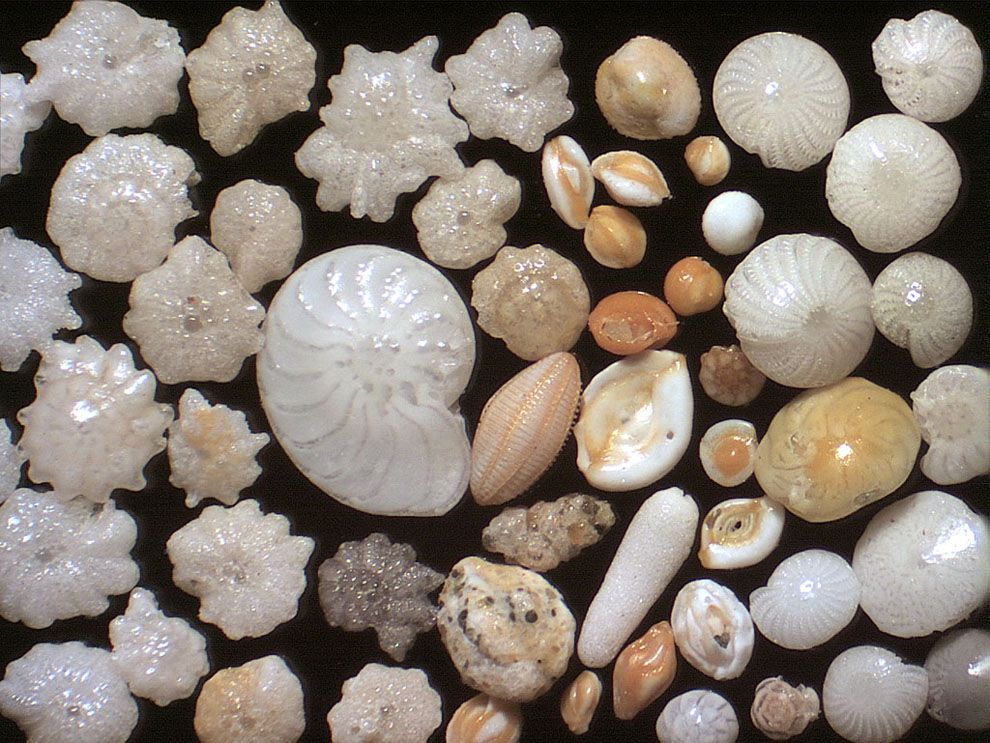
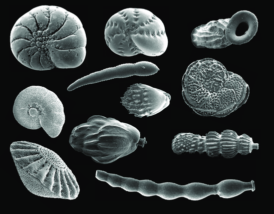

Foraminifera
She sells sea shells by the sea shore


About the Forams
Foraminifera are tiny single celled living organisms, or eukaryotes. They survive both as planktonic and as benthos in deeper water. When they survive in shallower waters they use a test, or shell, that is made up of calcium carbonate. Those which were founded in the trenches are protected by an organic test instead, proving the vitality of having these shells. There are over 4,000 types that all appear differently!
These foraminifera are actually used as guides to find petroleum oils in our seas. Only specific species are capable of residing, or have fossils of their shells found, in the areas where drilling is common.
They are incredibly abundant making them a reliable food source for many different species. We know very little information about the behaviors of foraminifera itself, but we understand that their presence is vital for other marine life.
Learn more about the Foraminifera at these sites:
UCMP Berkelely - An Introduction to Foraminifera
Britannica - Foraminifera